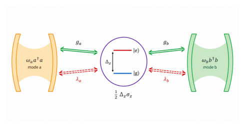
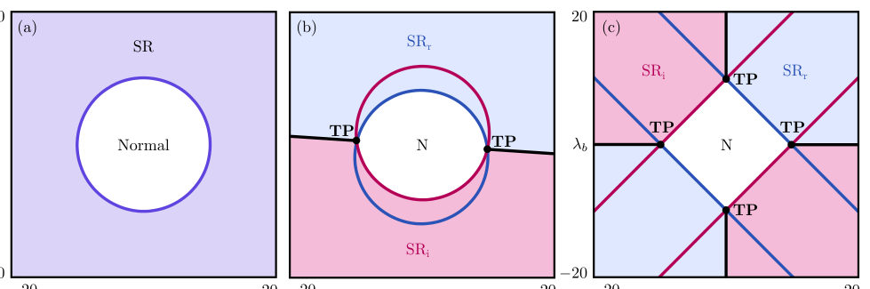

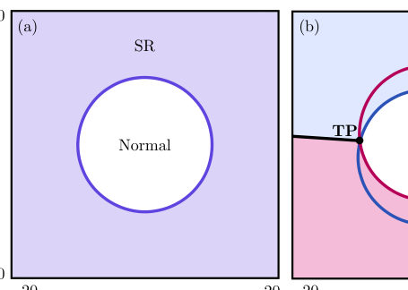
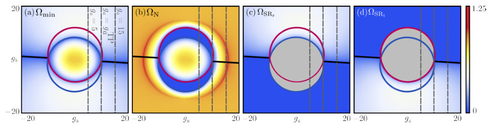
← Index · ← Previous · Next →
Authors: Jyotirmaya Mohanta, Yutaka Shikano
Type: both · Category: other · PDF: https://arxiv.org/pdf/2608.26096v1
Analysis basis: full PDF text, analyzed in chunks
Topic relevance: 🔥 quantum measurements 4/5
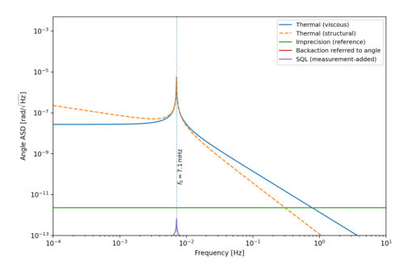
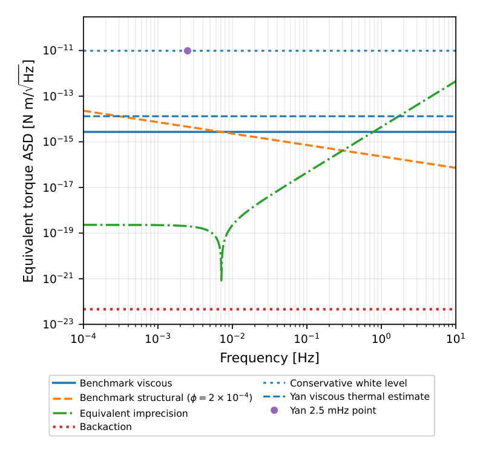
Summary. This paper develops a comprehensive statistical framework for analyzing torsion-balance data to test deviations from Newtonian gravity. It quantifies constraints on both deterministic signals and stochastic noise sources by carefully subtracting calibrated noise budgets. The methodology provides a standardized, quantum-limited interface for experimental searches in semiclassical gravity.
Why it may be interesting. The rigorous application of quantum noise analysis (e.g., backaction, quantum limits) to macroscopic, low-frequency gravitational measurements provides a unique bridge between quantum measurement theory and fundamental physics tests.
Main problem. The paper aims to use calibrated torsion-balance measurements to set rigorous bounds on both deterministic and stochastic deviations from standard Newtonian gravity, providing an interface for testing semiclassical gravity models.
Main result. The analysis derives specific bounds, such as a torque-diffusion coefficient $D_τ \lesssim 2.4 imes10^{-23}\,\mathrm{N^2\,m^2\,s}$ from existing sensitivities, which constrain potential deviations from standard gravity.
Method. It employs advanced signal processing techniques, including matched-filter bounds (Cramér-Rao) for deterministic signals and residual spectrum analysis for stochastic noise, all calibrated against known noise sources.
Model / system. The physical system is a torsion balance, modeled as a linear torsional oscillator. The analysis incorporates the full noise budget, including thermal, Newtonian, environmental, imprecision, and backaction noise sources, using the torsional susceptibility $\chi(\omega)$.
Key observables. Calibrated angle-equivalent noise budget, residual torque spectrum, and the torque-diffusion coefficient ($D_τ$).
Important parameters / regimes. Room-temperature resonant thermal ASD ($1.36 imes10^{-4}\,\mathrm{rad}/\sqrt{\mathrm{Hz}}$) and the measurement-added SQL ($3.25 imes10^{-12}\,\mathrm{rad}/\sqrt{\mathrm{Hz}}$).
Assumptions / limitations. The analysis constrains observable torque projections rather than testing the full relativistic semiclassical Einstein equation, and the white-noise limit is required to simplify the stochastic bound to $D_τ$.
Figures summary. Not specified.
Paper structure. The paper establishes a standardized measurement interface using one-sided PSDs, details the matched-filter formalism for deterministic tests, and develops the residual spectrum analysis for stochastic noise, culminating in the derivation of $D_τ$.
Calibrated torsion-balance spectra constrain deterministic and stochastic deviations from standard Newtonian gravity. Using one-sided spectra, we derive a calibrated angle-equivalent noise budget and finite-time matched-filter/Cramér-Rao bounds for known torque templates. For stochastic models, subtracting the calibrated standard noise budget (thermal, Newtonian, environmental, imprecision, backaction) from the observed angle spectrum yields a residual spectrum, convertible to an equivalent residual torque spectrum via calibrated torsional susceptibility. This bounds additional stationary stochastic torque noise. This frequency-resolved bound compresses to a single torque-diffusion coefficient, $D_τ$, only in the Markovian white-noise limit; non-Markovian or colored models require the full residual spectrum. Page--Geilker branch discrimination and Fedida-Kent mixture-equivalence tests address distinct physical questions, but upon projection onto torque templates, both reduce to the same statistical matched-filter discrimination problem. For a room-temperature Cavendish benchmark, resonant thermal angle ASD is $1.36\times10^{-4}\,\mathrm{rad}/\sqrt{\mathrm{Hz}}$, while measurement-added SQL is $3.25\times10^{-12}\,\mathrm{rad}/\sqrt{\mathrm{Hz}}$. For the Yan \emph{et al.} search, the reported $0.3\,μ\mathrm{rad}/\sqrt{\mathrm{Hz}}$ sensitivity at $2.5\,\mathrm{mHz}$ yields a conservative bound $D_τ\lesssim 2.4\times10^{-23}\,\mathrm{N^2\,m^2\,s}$, assuming white torque noise. These formulations provide an interface linking calibrated torsion-balance data, deterministic tests, and stochastic semiclassical-gravity searches, without asserting a direct test of the full relativistic semiclassical Einstein equation.
Authors: Sandeep Jangid, Aman Kumbhakar, Juliane U. Klamser, Tridib Sadhu
Type: theory · Category: statistical mechanics · PDF: https://arxiv.org/pdf/2608.25916v1
Analysis basis: full PDF text, analyzed in chunks
Topic relevance: Full counting statistics 3/5 · Keldysh / 2PI / non-Gaussian methods 3/5 · non-equilibrium universality 3/5 · driven-dissipative phase transition 2/5 · methods for driven-dissipative 2/5 · Frenkel-Kontorova 1/5 · analog quantum simulation 1/5 · correlated / nonlocal dissipation 1/5 · quantum measurements 1/5 · scars & prethermalization 1/5
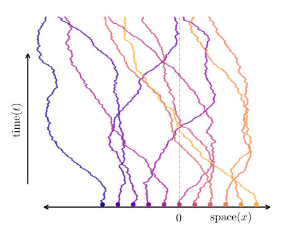
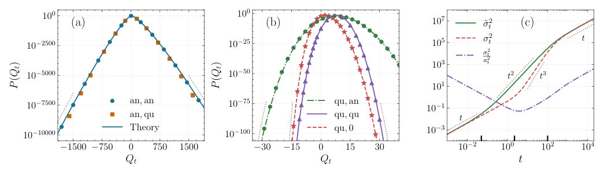
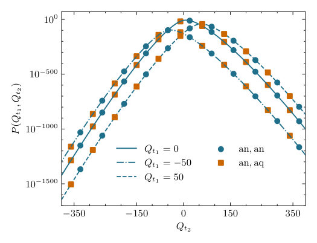
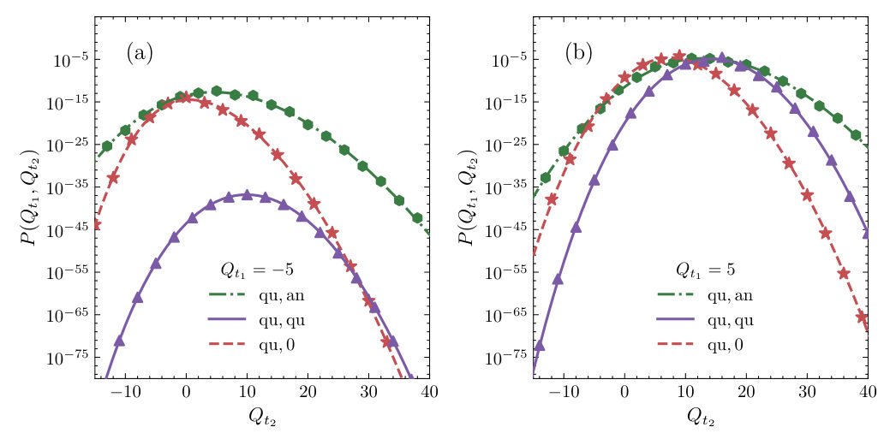
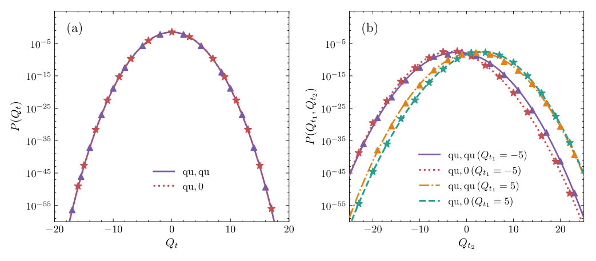
Summary. This work analyzes the current fluctuations in a model of active particles (AOUPs) using advanced statistical tools like large-deviation theory. It establishes that active systems exhibit complex, time-dependent scaling regimes unlike passive ones. The methodology involves calculating complex CGFs for both single-time and two-time current measurements, providing a detailed statistical characterization of non-equilibrium transport.
Why it may be interesting. The study of active matter dynamics and non-equilibrium statistical mechanics is highly relevant to AMO physics, particularly in systems involving particle transport or driven quantum systems where non-Markovian effects and non-equilibrium fluctuations are key.
Main problem. The paper investigates the statistics of the time-integrated current in a gas of active Ornstein-Uhlenbeck particles, contrasting its behavior with passive diffusive systems.
Main result. Active systems exhibit distinct diffusive, super-diffusive, and sub-diffusive scaling regimes for current fluctuations, and the statistics retain a memory of the initial state even at large times.
Method. The analysis relies heavily on large-deviation theory, calculating Cumulant Generating Functions (CGFs) for both one-time and two-time current measurements.
Model / system. The model is an infinite one-dimensional gas of independent active Ornstein-Uhlenbeck particles (AOUPs), whose dynamics are governed by coupled equations for position and velocity.
Key observables. Time-integrated current ($Q_t$), joint probability distribution $P(Q_{t_1}, Q_{t_2})$, and the associated Large-Deviation Function (LDF) $\Phi(q)$.
Important parameters / regimes. Initial densities ($ ho_a, ho_b$), time scales ($ au$), and the ratio of active to diffusive effects (related to $Pe^2/2D au$).
Assumptions / limitations. The analysis distinguishes between 'annealed' and 'quenched' averaging procedures over initial conditions, and uses rare-event importance sampling for numerical verification.
Figures summary. Figures illustrate the scaling of current fluctuation variances ($ ilde{\sigma}_t^2$ vs. time) showing multiple dynamical regimes, and show the joint probability distribution $P(Q_{t_1}, Q_{t_2})$ for different initial conditions.
Paper structure. The paper systematically derives the CGFs for the current in various ensembles (annealed/quenched for position and velocity), analyzes the resulting scaling regimes, and extends the formalism to calculate the two-time joint current statistics.
We investigate the statistics of the time-integrated current in an infinite one-dimensional gas of independent active Ornstein--Uhlenbeck particles, as a model system for studying an active generalisation of the corresponding passive (diffusive) phenomenology. Unlike the latter, where current fluctuations exhibit universal sub-diffusive scaling, active systems display diffusive, super-diffusive, and sub-diffusive regimes over different time scales. We fully characterise the distribution of current in terms of large-deviation asymptotics, showing that all of these scaling regimes are described by a single scaled cumulant generating function. Moreover, the statistics retain a dependence on the initial condition even at large times, revealing a persistent memory of the initial state. We further obtain the joint large-deviation statistics of currents measured at two distinct times, characterising temporal correlations. Our analytical predictions are verified using rare-event importance sampling, which resolves probabilities as small as $10^{-1000}$.
Authors: Ian MacPhail-Bartley, Sören E. Mahr, Cameron E. Peters, Baptiste Coquinot, Volker Karle, Giacomo Bighin, Ragheed Alhyder, Mikhail Lemeshko, Henrik Stapelfeldt, Valery Milner
Type: both · Category: other · PDF: https://arxiv.org/pdf/2608.25161v1
Analysis basis: full PDF text, analyzed in chunks
Topic relevance: correlated / nonlocal dissipation 3/5 · driven-dissipative phase transition 3/5 · methods for driven-dissipative 3/5 · non-equilibrium universality 2/5 · quantum measurements 2/5 · Frenkel-Kontorova 1/5 · Keldysh / 2PI / non-Gaussian methods 1/5 · analog quantum simulation 1/5 · scars & prethermalization 1/5
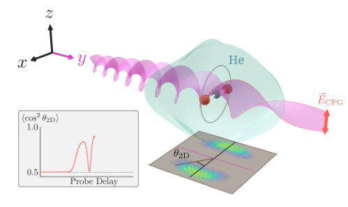
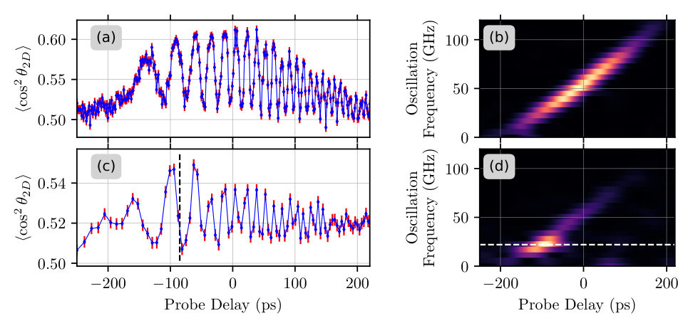
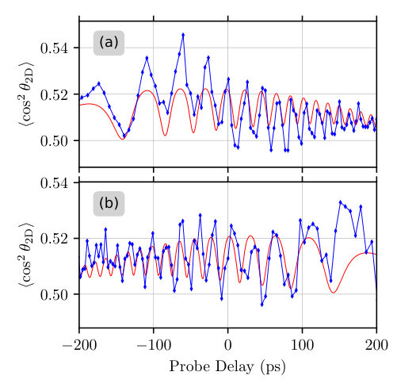
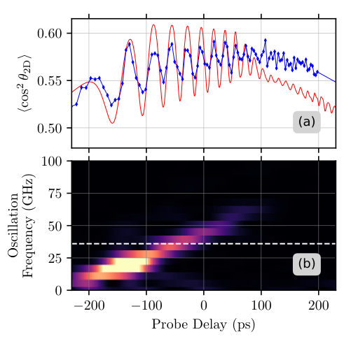
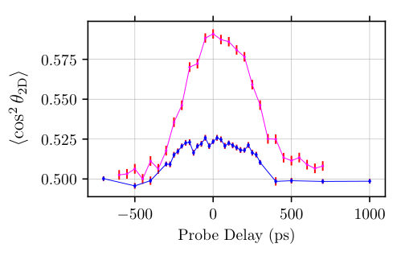
Summary. This paper investigates molecular rotation in superfluid helium using an optical centrifuge to probe strong dissipative coupling. By continuously driving the rotor, the system is forced into a regime where molecular energy matches the superfluid excitation spectrum. The resulting dynamics allow researchers to directly measure the molecule-bath coupling strength by tracking the decay of molecular alignment.
Why it may be interesting. This work is highly relevant to AMO physics as it tackles open quantum systems problems—specifically, how coherent quantum dynamics are modified and controlled by strong coupling to a complex quantum bath (superfluid helium).
Main problem. The research aims to understand the breakdown of frictionless motion at the nanoscale when objects move through superfluid helium, specifically reaching the regime of strong dissipative coupling.
Main result. The use of an ultraslow optical centrifuge successfully drives the system into the strong-dissipation regime, allowing for a direct measurement of the molecule-bath coupling strength by observing the loss of molecular alignment.
Method. The study combines experimental techniques (VMI, optical centrifuging) with theoretical modeling using master equations and time-dependent Lindblad dynamics to simulate the rotor-bath interaction.
Model / system. The system involves molecular rotors ($ ext{CS}_2$, $ ext{OCS}$) embedded in superfluid helium, driven by a time-varying optical centrifuge field. The dynamics are modeled using a Hamiltonian in the rotating frame coupled to a thermal bath via a master equation.
Key observables. The degree of molecular alignment, $\langle \cos^2 heta_{2D} angle(t)$, is the primary diagnostic observable, tracked via time-resolved measurements and spectrograms.
Important parameters / regimes. Key parameters include the Landau critical velocity, the centrifugal wall limit, and the characteristic thermalization rate ($ au$) which defines the strong-dissipation regime.
Assumptions / limitations. The analysis relies on phenomenological master equations and Lindblad ansatzes to model the bath interaction, and the steady-state construction is noted to omit transient memory effects.
Figures summary. Figures illustrate the VMI geometry and time evolution of the alignment signal $\langle \cos^2 heta_{2D} angle(t)$ for $ ext{CS}_2$ in both jets and droplets, comparing model predictions (Lindblad vs. steady-state) against experimental data.
Paper structure. The paper progresses by establishing the physical problem (dissipation in superfluid helium), introducing the optical centrifuge as a novel probe, developing the theoretical framework (Hamiltonian and master equation), and finally comparing model predictions (steady-state vs. time-dependent Lindblad) against experimental measurements for both $ ext{CS}_2$ and $ ext{OCS}$.
A macroscopic manifestation of superfluidity is that objects moving through liquid helium experience negligible friction below the Landau critical velocity. How this frictionless motion breaks down at the nanoscale remains an open question. Molecules embedded in helium nanodroplets represent a well-controlled system for studying this breakdown, yet none has reached the regime of strong dissipative coupling, when energy transfer from the molecule to the superfluid dominates the observed dynamics. Molecular rotation, induced by short laser pulses, offer a suitable probe to reach rotational energies in the range of the roton gap, where superfluid helium supports a large number of elementary excitations. However, the solvation shell around a rotating molecule caps the energy reachable by a free rotor after impulsive excitation well below the roton excitation energy. Here we show that continuous driving with an ultraslow optical centrifuge overcomes this limitation: the strong field dresses the molecule into pendular states whose energies fall within the spectrum of the collective excitations of the superfluid, placing the system in the strong-dissipation regime. The resulting rapid thermalization locks the molecule to the rotating field until the rotation-induced level splittings overtake the thermalization rate, beyond which the molecular alignment is progressively lost. Our approach offers a direct measurement of the molecule-bath coupling in a quantum fluid.
Authors: Per Moosavi
Type: theory · Category: statistical mechanics · PDF: https://arxiv.org/pdf/2608.25006v1
Analysis basis: full PDF text, analyzed in chunks
Topic relevance: correlated / nonlocal dissipation 3/5 · driven-dissipative phase transition 3/5 · non-equilibrium universality 3/5 · Keldysh / 2PI / non-Gaussian methods 2/5 · methods for driven-dissipative 2/5 · quantum measurements 2/5 · analog quantum simulation 1/5
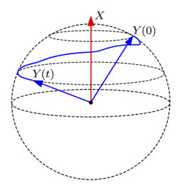
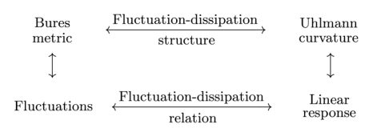
Summary. This work develops a unified geometric framework that links the metric and curvature of mixed quantum states via a fluctuation-dissipation structure. It demonstrates that this structure naturally reduces to the known Kähler geometry for pure states. Crucially, it uses this geometric insight to provide a physical characterization of diverse transport behaviors, such as diffusion and ballistic motion, based on the system's linear response.
Why it may be interesting. It provides a deep, unified geometric framework connecting fundamental concepts like quantum geometry (Bures/Uhlmann metrics) directly to measurable transport properties (conductivity), which is highly relevant for understanding open quantum systems and non-equilibrium dynamics.
Main problem. The paper aims to identify a general geometric structure relating the distance measure (metric) and curvature for mixed quantum states that embodies the physical principle of fluctuation-dissipation.
Main result. This structure unifies quantum geometry with fluctuation-dissipation, showing that the geometry is Kähler if and only if the state is pure, and providing a geometric characterization for various transport behaviors.
Method. The authors define and analyze the metric ($G_ ho$) and curvature ($F_ ho$) tensors for mixed states, relating them via a generalized fluctuation-dissipation structure and connecting them to linear response functions ($\kappa_{ab}(t)$).
Model / system. The analysis applies to general quantum states ($ ho$) on a Hilbert space, covering both pure and mixed states, and relates these abstract geometric concepts to physical transport phenomena.
Key observables. Distance measure ($G_ ho$), Curvature ($F_ ho$), Linear response function ($\kappa_{ab}(t)$), and the derived quantum geometric tensor.
Important parameters / regimes. Finite temperature (mixed states), time evolution ($t$), and frequency ($\omega$) in the response functions.
Assumptions / limitations. The analysis assumes the existence of a general structure relating metric and curvature, and for transport, it assumes the initial state is in equilibrium.
Figures summary. Figure 1 illustrates the general fluctuation-dissipation structure relating distance measure and curvature; Figure 2 sketches transport behavior regimes (ballistic, diffusive) based on vector rotation.
Paper structure. The paper first establishes the general fluctuation-dissipation structure for mixed states, showing its reduction to the Kähler structure for pure states. It then applies this framework to linear response theory, equating the response function to the Uhlmann curvature, and finally uses this relationship to geometrically classify transport regimes (diffusion, ballistic) via the time evolution of tangent vectors.
The geometry of quantum states is a fundamental research area with applications ranging from band theory in condensed matter to variational algorithms in quantum information. Due to their relative simplicity, pure states are usually studied, while mixed ones are needed in general, for instance to allow for finite temperatures. The geometry of mixed states, however, is much more challenging, with important aspects yet to be explored. Here, we provide one missing piece by identifying the structure that relates distance measure and curvature for general (mixed or pure) quantum states. This structure is shown to carry the physical meaning of fluctuation-dissipation---by directly relating distance measure with fluctuations and curvature with linear response---and it turns into the corresponding well-known structure for pure states, where it is Kähler, and only then. We thus obtain a general, simple fluctuation-dissipation picture, which, among its consequences, implies that response functions inherently probe the mixed-state quantum geometric tensor. We end by using this picture to give geometric characterizations of generic transport behaviors.
Authors: Jiaxuan Guo, Simin Nie, Xiting Zhang, Fritz B. Prinz
Type: theory · Category: strongly correlated electrons · PDF: https://arxiv.org/pdf/2608.25816v1
Analysis basis: full PDF text, analyzed in chunks
Topic relevance: analog quantum simulation 3/5 · driven-dissipative phase transition 3/5 · methods for driven-dissipative 3/5 · Keldysh / 2PI / non-Gaussian methods 2/5 · Full counting statistics 1/5 · correlated / nonlocal dissipation 1/5 · non-equilibrium universality 1/5 · quantum measurements 1/5
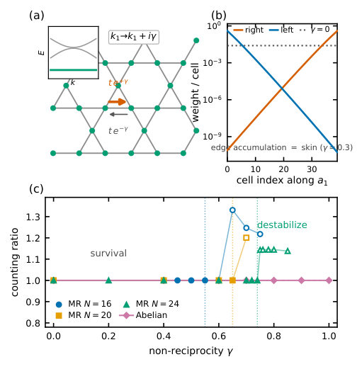
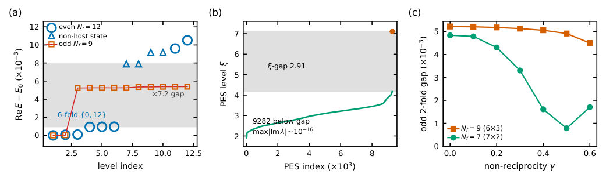
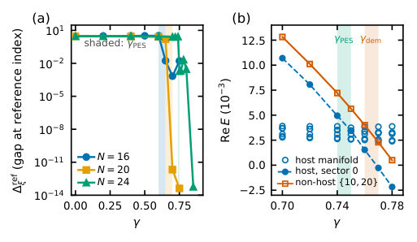
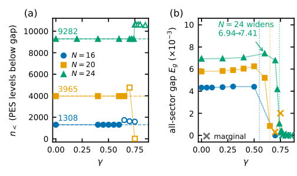
Summary. This paper analyzes the stability of the non-Abelian Moore-Read topological order when subjected to a non-Hermitian skin effect in a fractional Chern insulator model. Using particle-entanglement counting, the authors demonstrate that the topological signature remains robust over a finite range of nonreciprocity, although the Abelian counterpart proved more stable. This establishes a diagnostic tool for characterizing topological phases in open, non-Hermitian quantum systems.
Why it may be interesting. The work provides a concrete theoretical framework for diagnosing topological order in open, non-Hermitian systems, which is highly relevant for understanding edge physics in synthetic quantum materials.
Main problem. The study investigates how the non-Hermitian skin effect alters the topological order of a non-Abelian Moore-Read fractional Chern insulator.
Main result. The non-Abelian Moore-Read entanglement counting remains robust and locks to clean references over finite nonreciprocity windows, although the Abelian Laughlin state was found to be even more robust.
Method. The analysis uses biorthogonal methods to solve the non-Hermitian Hamiltonian and diagnoses topological order via the biorthogonal (2, 4)-admissible particle-entanglement counting.
Model / system. The model is a non-Abelian Moore-Read fractional Chern insulator realized on a kagome lattice, incorporating a Hatano-Nelson type imaginary-gauge deformation and a three-body interaction.
Key observables. Biorthogonal (2, 4)-admissible particle-entanglement counting (Moore-Read fingerprint), spectral gaps, and the persistence of the count versus the nonreciprocity parameter $\gamma$.
Important parameters / regimes. Nonreciprocity parameter $\gamma$, system size $N$ ($16, 20, 24$), and the filling fraction $ u$ ($ u=1/2$ for Moore-Read, $ u=1/3$ for Laughlin).
Assumptions / limitations. The analysis relies on selecting the six lowest-Re energy eigen-pairs to define the ground-state manifold and the entanglement spectrum.
Figures summary. Figures illustrate the imaginary-gauge deformation on the kagome lattice, the skin effect on single-particle eigenstates, and the entanglement-counting ratio remaining locked for the Moore-Read state over a finite window.
Paper structure. The paper introduces the non-Hermitian model and the diagnostic tool (PES counting), presents results showing the finite-size survival window for the Moore-Read count, compares it to the Abelian Laughlin state, and discusses the physical implications of the delocking threshold.
We study a non-Abelian Moore-Read fractional Chern insulator under a translation-preserving, nonreciprocal deformation that generates the non-Hermitian skin effect under open boundaries. The model combines the imaginary-gauge Hatano-Nelson deformation with a kagome-lattice three-body interaction designed to stabilize Moore-Read order at $ν=1/2$. Our primary diagnostic is the biorthogonal $(2,4)$-admissible particle-entanglement counting of the sixfold Moore-Read manifold, the standard Moore-Read fingerprint. Across three sizes ($N=16,20,24$), the counting locks to the clean references 1308, 3965, and 9282 over finite nonreciprocity windows through $γ\le0.55$, $0.65$, and $0.74$, respectively, with positive reference-rank entanglement gaps. Within every reported window the count is unchanged by the spectral readings tested; at $N=16$ it is also unchanged across three reduced density operators, with all 15 combinations returning 1308. The sixfold pattern for even $N_f$ and the adiabatically tracked Ising-odd doublet remain separated over the tested range $γ\le0.6$. Beyond a geometry-dependent threshold the instantaneous-lowest-six reference-rank gap drops sharply and its counting destabilizes. At $N=24$ a sector-0 branch pair becomes complex conjugate over a narrow interval inside the delocking bracket; both continuations through the interval are delocked at the tested PES points $γ=0.76$, $0.77$, and $0.80$. A same-lattice Abelian $ν=1/3$ Laughlin realization retains its counting to $γ=1.0$, so its counting is the more robust. On the torus the eigenstates remain extended; under open boundaries the right and left states skin-localize at opposite edges while the biorthogonal particle-entanglement spectrum is invariant under the imaginary-gauge similarity, so the torus and the open cylinder probe the same deformation under periodic and open boundaries.
Authors: Mesfin Taye
Type: theory · Category: statistical mechanics · PDF: https://arxiv.org/pdf/2608.25638v1
Analysis basis: full PDF text, analyzed in chunks
Topic relevance: driven-dissipative phase transition 3/5 · methods for driven-dissipative 3/5 · non-equilibrium universality 3/5 · Keldysh / 2PI / non-Gaussian methods 2/5 · analog quantum simulation 1/5 · correlated / nonlocal dissipation 1/5 · quantum measurements 1/5
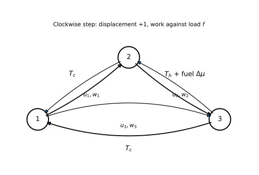
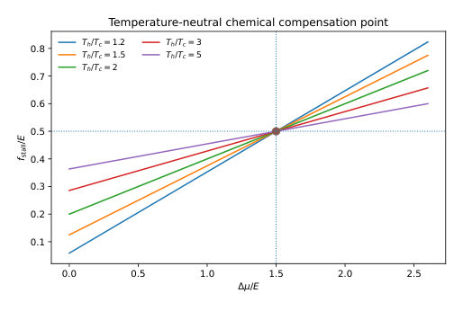
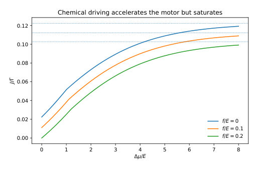
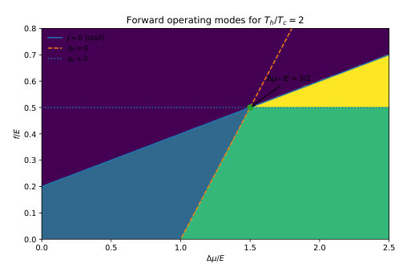
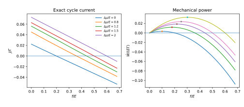
Summary. This work provides an exact theoretical framework for a chemo-thermal Brownian engine, modeling energy conversion driven by both temperature gradients and chemical fuel. Key findings include determining the stall force and identifying a unique temperature-neutral point where performance is robust against temperature changes. The methodology is highly valuable for understanding non-equilibrium processes in complex open systems.
Why it may be interesting. The rigorous, exact treatment of non-equilibrium thermodynamics in a coupled chemo-thermal system provides powerful analytical tools applicable to open quantum systems where multiple energy reservoirs (heat, chemical potential) drive dynamics.
Main problem. The paper develops an exactly solvable model to study energy transduction in a chemo-thermal Brownian heat engine, driven by both temperature gradients and chemical free energy drops.
Main result. It derives the exact stall force and identifies a temperature-neutral chemical compensation point where the stall force is independent of reservoir temperatures. The analysis also shows that the stationary current increases monotonically with chemical fuel consumption.
Method. The analysis uses the master equation approach derived from local detailed balance to obtain exact stationary probabilities and currents, avoiding common approximations like linear-response theory.
Model / system. The system is a three-state periodic energy sequence engine ($0 o E o 2E o 0$) coupled to two cold and one hot reservoir, with chemical fuel ($\mu$) consumed during the hot transition.
Key observables. Cycle Affinity ($\mathcal{A}$), Stall Force ($f_{stall}$), Stationary Current ($J$), and Exergy Efficiency ($\eta_x$).
Important parameters / regimes. Temperature difference ($\Th - \Tc$), energy gap ($E$), and chemical potential drop ($\mu$).
Assumptions / limitations. The analysis is exact for the unicyclic case, though a multicyclic extension is introduced later. The Metropolis dynamics are assumed.
Figures summary. Figures illustrate the universal intersection of stall curves at the temperature-neutral point, the monotonic increase of current with chemical affinity, and the dependence of power on the mechanical load.
Paper structure. The paper first establishes the model and derives the exact cycle affinity and stall force. It then analyzes the temperature-neutral point and the current's dependence on chemical potential. Finally, it discusses the power optimization and extends the analysis to multicyclic operation.
We develop an exactly solvable chemo--thermal extension of the three-state Metropolis Brownian heat engine. The particle moves through the periodic energy sequence $0\to E\to 2E\to0$, performs mechanical work against a load $f$ on every forward step, interacts with two cold links and one hot link, and consumes one fuel molecule of free-energy drop $\muu$ on the hot transition. Local detailed balance gives an exact cycle affinity \begin{equation} \mathcal A=E\left(\Tc^{-1}-\Th^{-1}\right)+\muu/\Th-f\left(2/\Tc+1/\Th\right), \end{equation} and the full stationary probabilities and current are obtained without linear-response, weak-driving, or high-barrier approximations. Several results follow. First, the exact stall force is \begin{equation} \fs=\frac{E(\Th-\Tc)+\Tc\muu}{2\Th+\Tc}. \end{equation} Second, there is a temperature-neutral chemical compensation point $\muu_*=3E/2$ at which $\fs=E/2$ for every $\Th>\Tc$ and the hot and cold heats both vanish at reversible stall. Third, in both Metropolis branches the stationary current is a strictly increasing function of $\muu$ at fixed mechanical parameters, but approac
Authors: Franziska Barkhausen, Laura Ares, Stefan Schumacher, Jan Sperling
Type: theory · Category: quantum information and computing · PDF: https://arxiv.org/pdf/2608.25788v1
Analysis basis: full PDF text, analyzed in chunks
Topic relevance: analog quantum simulation 3/5 · Full counting statistics 2/5 · Keldysh / 2PI / non-Gaussian methods 2/5 · methods for driven-dissipative 2/5 · Tavis-Cummings & cavity-many-emitter 1/5 · correlated / nonlocal dissipation 1/5 · driven-dissipative phase transition 1/5 · non-equilibrium universality 1/5 · quantum measurements 1/5
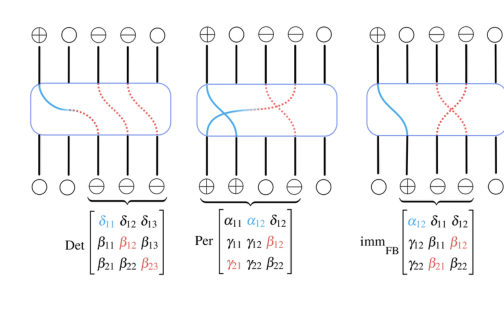
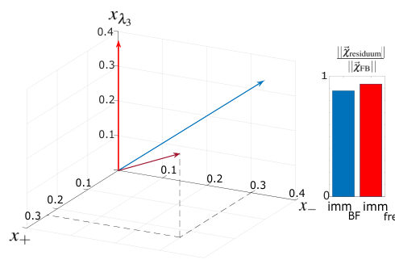
Summary. This paper develops a mathematical framework to analyze quantum sampling in hybrid light-matter systems combining fermionic and bosonic excitations. It shows that the resulting output probabilities are described by generalized matrix immanants, which are mathematically distinct from simple determinants or permanents. This demonstrates that such mixed-statistics systems enable computational functionalities beyond what is achievable with pure bosonic or fermionic quantum circuits.
Why it may be interesting. This work directly addresses the mathematical complexity of quantum computation in realistic, mixed-statistics physical platforms, providing a rigorous framework for quantifying quantum advantage beyond established models.
Main problem. The paper investigates quantum sampling in hybrid light-matter systems where the statistics of excitations are mixed (fermionic and bosonic), moving beyond standard boson or fermion sampling.
Main result. The output probabilities are governed by generalized matrix immanants, which are proven to be linearly independent from standard determinants and permanents, indicating novel computational resources.
Method. The analysis uses the Born rule applied to the output state derived from a unitary linear transformation acting on mixed fermionic and bosonic operators, leading to the definition of generalized immanants.
Model / system. The model involves interacting light-matter systems described by a linear network transformation acting on fermionic and bosonic excitations. The complexity is analyzed by generalizing the mathematical structure beyond simple commutation relations.
Key observables. The output probability $p$, which is proportional to the square of the generalized immanant, $| ext{imm}(A)|^2$.
Important parameters / regimes. The structure of the immanant depends on the exchange symmetries encoded by the function $\chi(\sigma)$, which can be an irreducible character of $S_N$.
Assumptions / limitations. The analysis often assumes single excitations per output mode and focuses on the operator part of the output state, neglecting higher-excitation terms.
Figures summary. Figures illustrate the sampling network for mixed modes and plot the decomposition coefficients of the resulting immanant into contributions from determinants, permanents, and residual components.
Paper structure. The paper progresses by first establishing the mathematical framework using immanants, then applying it to mixed fermionic/bosonic systems, and finally extending the analysis to quasiparticle sampling, showing the resulting functions exceed standard immanant forms.
Boson sampling is one of the most prominent methods to verify quantum advantage, harnessing the computational complexity of the permanent of a network matrix. Similar quantum sampling problems utilize other expressions for the output probabilities, such as the fermion-based analog applying determinants. In this work, we study sampling setups of interacting light-matter systems, combining fermion and boson sampling. The mixed network input consists of fermionic and bosonic excitations. Sampling the output probability of the modes then yields contributions that are neither purely determinant nor permanent but general immanants. Specifically, we prove that these immanant contributions are linearly independent from determinants and permanents, rendering our mixed sampling network an ideal candidate for light-matter quantum application beyond pure fermion and boson sampling. Furthermore, quantum sampling with statistics that are neither bosonic nor fermionic results in expressions which even exceed immanants, further extending the functionality of quantum samplers.
Authors: Xiufeng Cao, Ofri Adiv, Neil G. R. Broderick
Type: theory · Category: other · PDF: https://arxiv.org/pdf/2608.25455v1
Analysis basis: full PDF text, analyzed in chunks
Topic relevance: Tavis-Cummings & cavity-many-emitter 3/5 · analog quantum simulation 3/5 · Keldysh / 2PI / non-Gaussian methods 2/5 · methods for driven-dissipative 2/5 · Dicke superradiance 1/5 · driven-dissipative phase transition 1/5 · superradiant laser 1/5




Summary. This theoretical study analyzes a generalized two-mode quantum Rabi model to map out its multicritical phase diagram. By employing a unified Bogoliubov-deGennes framework, the authors show that anisotropy lifts a continuous symmetry, generating distinct multicritical topologies. The key finding is that competing soft-mode instabilities, derived from collective excitations, microscopically determine the system's phase boundaries.
Why it may be interesting. This work provides a rigorous quantum many-body approach to understanding how microscopic couplings (like anisotropy) dictate the macroscopic phase diagram topology in light-matter interactions, which is central to quantum optics and cavity QED.
Main problem. The paper investigates the microscopic origin and geometric organization of multicritical structures in quantum many-body systems, linking competing soft modes to phase topology.
Main result. Anisotropy lifts the U(1)-symmetric superradiant manifold, providing a common origin for coordinate- and momentum-like soft-mode instabilities that determine the multicritical phase structure.
Method. The analysis employs a unified Bogoliubov-deGennes (BdG) framework applied to an effective low-energy Hamiltonian derived via Schrieffer-Wolff transformations.
Model / system. The system is a generalized two-mode quantum Rabi model involving two bosonic modes and a two-level system, characterized by independently tunable rotating- and counter-rotating-wave couplings.
Key observables. Collective excitation spectrum ($\Omega_{N,\pm}$), ground-state energy ($E_{ ext{GS}}$), and soft-mode conditions derived from the vanishing of the lower Bogoliubov branch.
Important parameters / regimes. Tunable coupling strengths ($g_{a,b}, \lambda_{a,b}$), detuning ($\Delta_z$), and the ratio of coupling strengths to detuning.
Assumptions / limitations. The analysis relies on the large-frequency-ratio regime to apply the Schrieffer-Wolff transformation and assumes the physical phase is determined by the global minimum of the quantum-corrected ground-state energy.
Figures summary. Figures illustrate the phase diagram evolution, showing the transition from a U(1)-symmetric Goldstone phase to distinct multicritical topologies (two- or four-triple-point) upon introducing anisotropy.
Paper structure. The paper first establishes the Hamiltonian and then analyzes the normal phase using BdG theory to find soft-mode conditions. It then extends this to the two superradiant branches (SRr and SRi), unifying the analysis across all three phases to map the full multicritical phase diagram.
Multicritical phenomena play a central role in quantum many-body systems, yet their microscopic origin in light--matter platforms remains largely unexplored. Here we investigate a generalized two-mode quantum Rabi model with independently tunable rotating- and counter-rotating-wave couplings. We demonstrate that anisotropy lifts the parent U(1)-symmetric superradiant manifold with a gapless Goldstone-like mode by phase locking the complex superradiant order parameter. This phase-locking mechanism provides the common microscopic origin of the coordinate- and momentum-like soft-mode instabilities, the emergence of symmetry-related two- and four-triple-point multicritical topologies, and the corresponding thermodynamic responses. Within a unified Bogoliubov framework, we further show how the dominant soft mode is redistributed between the two symmetry-related instability channels, thereby determining the multicritical phase structure. The resulting phase boundaries are determined by collective soft-mode softening and coincide exactly with the mean-field instability conditions. We further show that the multicritical topology is directly encoded in the full quantum ground-state energy and its response functions, establishing a unified connection between phase topology, competing collective excitations, and thermodynamic observables. Our results identify competing soft-mode channels as the microscopic origin of tunable multicriticality in strongly coupled light--matter systems.
Authors: Yixiang Li, Dong An
Type: theory · Category: quantum information and computing · PDF: https://arxiv.org/pdf/2608.25822v1
Analysis basis: full PDF text, analyzed in chunks
Topic relevance: driven-dissipative phase transition 3/5 · methods for driven-dissipative 3/5 · non-equilibrium universality 2/5 · Keldysh / 2PI / non-Gaussian methods 1/5 · analog quantum simulation 1/5 · correlated / nonlocal dissipation 1/5 · quantum measurements 1/5

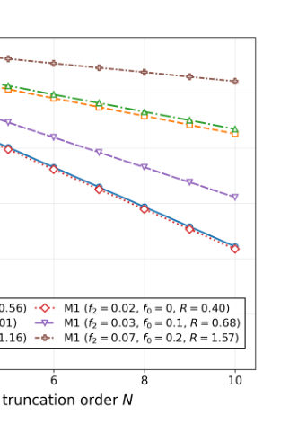
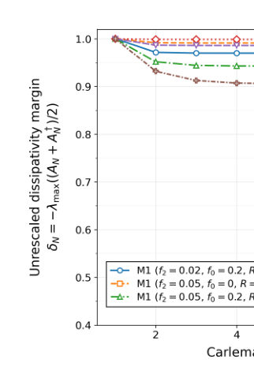
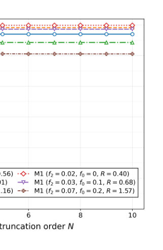
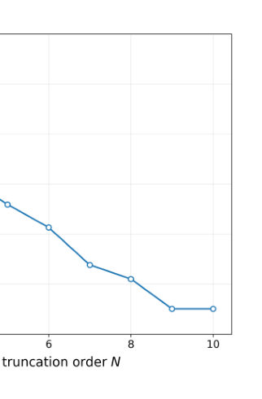
Summary. This paper introduces a fast-forwarded quantum algorithm to solve weakly nonlinear dissipative ODEs, achieving a time-independent complexity scaling. It achieves this by linearizing the nonlinear system using the Carleman embedding technique and applying advanced quantum simulation methods. This breakthrough significantly improves the feasibility of simulating complex, dissipative physical processes on quantum hardware.
Why it may be interesting. This work provides a concrete, complexity-improving quantum algorithm for simulating open quantum systems described by dissipative dynamics, which is a major challenge in quantum simulation.
Main problem. The paper addresses the challenge of efficiently simulating the time evolution governed by weakly nonlinear dissipative ordinary differential equations (ODEs) using quantum computation.
Main result. A novel fast-forwarded quantum algorithm is proposed that achieves a computational complexity explicitly independent of the evolution time T, significantly improving upon previous scaling bounds.
Method. The approach combines the Carleman embedding technique to linearize the nonlinear ODEs with a fast-forwarded quantum linear ODE solver, leveraging the dissipativity of the linearized system.
Model / system. The focus is on solving general weakly nonlinear dissipative ODEs, exemplified by quadratic nonlinear forms. The core technique involves transforming the nonlinear system into a high-dimensional, linear, dissipative system via Carleman embedding.
Key observables. Component probabilities, quadratic observables $\langle u(T)| M |u(T) angle$, and the final trace distance error $D( ho, |u_\gamma(T) angle\langle u_\gamma(T)|)$.
Important parameters / regimes. The dissipativity condition ($\mu(F_1) < 0$) and the weak nonlinearity condition ($R < 1$) are crucial for the algorithm's convergence and complexity bounds.
Assumptions / limitations. The primary fast-forwarding algorithm requires the linear part of the ODE to be dissipative. Alternative contour-integral methods are restricted to time-independent coefficients.
Figures summary. Figures illustrate the dissipativity margin ($\delta_N$) and error decay ($E_N$) for various models, confirming the theoretical behavior of the linearized system.
Paper structure. The paper builds from establishing the physical problem (nonlinear ODEs) to the mathematical tool (Carleman embedding for linearization), then develops the quantum algorithm (combining LCHS with fast-forwarding), and finally analyzes the error bounds and limitations.
We study a fast-forwarded quantum algorithm for solving weakly nonlinear dissipative ordinary differential equations. Our approach is a combination of the Carleman embedding technique and the linear combination of Hamiltonian simulation algorithm for linearized systems with fast-forwarded scaling. The complexity of our algorithm does not explicitly depend on the evolution time $T$, thus greatly improving the previous state-of-the-art $\widetilde{\mathcal{O}}(\sqrt{T})$ to $\mathcal{O}(1)$, and any remaining time dependence enters through the output norm and forcing parameters. We rigorously analyze the performance of this approach by convergence guarantees of the Carleman embedding for time-dependent coefficient matrices and detailed complexity estimates, and improve the realization of the Carleman-embedding-based algorithms by simplifying the post-selection step. In addition, we perform a numerical study on differential equations beyond the weakly nonlinear case, and identify possibility of achieving fast-forwarding scaling for systems with stronger nonlinearity or linear non-resonant effect.
Authors: Israel Klich, Marija Vucelja
Type: theory · Category: statistical mechanics · PDF: https://arxiv.org/pdf/2608.25141v1
Analysis basis: full PDF text, analyzed in chunks
Topic relevance: scars & prethermalization 3/5 · methods for driven-dissipative 2/5 · quantum measurements 2/5 · Keldysh / 2PI / non-Gaussian methods 1/5 · analog quantum simulation 1/5 · correlated / nonlocal dissipation 1/5 · driven-dissipative phase transition 1/5 · non-equilibrium universality 1/5
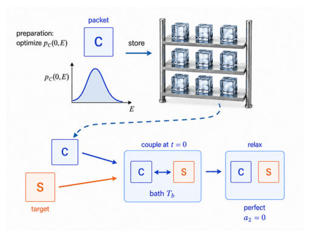
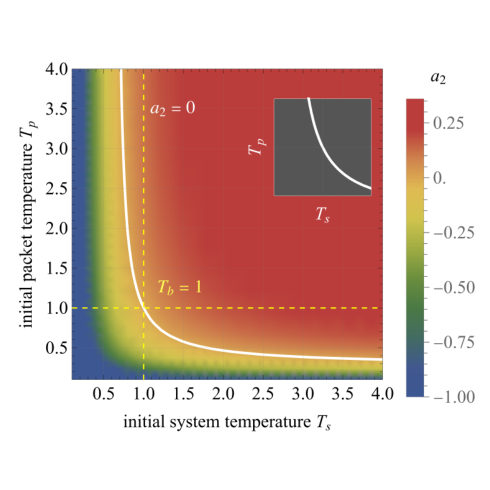
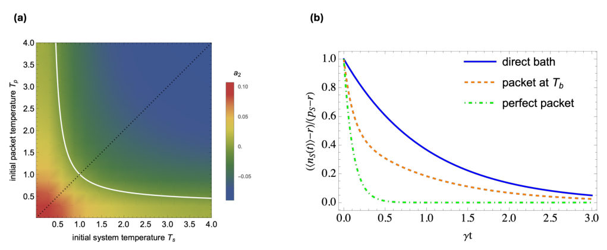
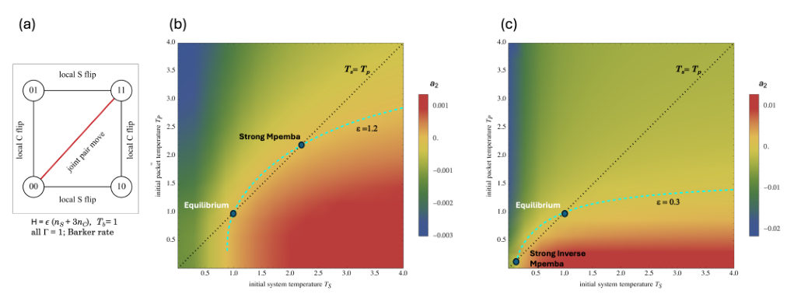
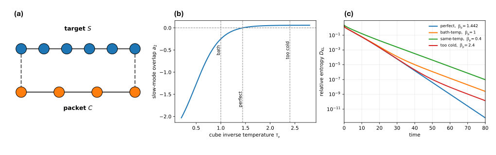
Summary. This work introduces 'thermalization packets' as an auxiliary system used to actively accelerate the relaxation of a target system toward equilibrium. By optimizing the packet's preparation, one can suppress the slowest relaxation mode, achieving faster dynamics. The research highlights that this optimization can lead to counterintuitive effects, such as the Mpemba effect analog, where cooling too much can actually slow the process.
Why it may be interesting. It provides a general, controllable mechanism to manipulate non-equilibrium relaxation dynamics, offering a theoretical tool to engineer faster thermalization protocols beyond simple cooling.
Main problem. The paper develops a strategy to accelerate the relaxation of a target system toward a prescribed thermal state by coupling it to an auxiliary system, termed a "thermalization packet."
Main result. Perfect packets can suppress the slowest relaxation mode, and counterintuitively, the optimal packet for cooling is not necessarily the coldest one, leading to an analog of the Mpemba effect.
Method. The analysis uses the spectral solution of the master equation to identify the slowest relaxation mode and defines perfect/optimal packets by controlling the amplitude of this mode.
Model / system. The framework is general but demonstrated using exactly solvable Metropolis dynamics, a minimal two-qubit model, and a boundary-coupled interacting Ising-spin system.
Key observables. Slowest mode amplitude ($a_2$), relaxation time, and the perfect-packet contour in the temperature space.
Important parameters / regimes. Initial temperatures of the target system ($T_s$) and the packet ($T_p$), and the bath temperature ($T_b$).
Assumptions / limitations. The analysis initially focuses on bath-mediated dynamics where energy is additive, and preparation effort is treated as a sunk cost.
Figures summary. Figures illustrate the concept of relaxation packets, showing how preparation affects the slow-mode amplitude, and depict the $a_2=0$ contour for the two-qubit model.
Paper structure. The paper introduces the concept of thermalization packets, derives the mathematical conditions for perfect/optimal packets, demonstrates these concepts in solvable models (two-qubit, Ising spin chain), and discusses the implications for non-monotonic cooling (Mpemba effect).
Relaxation toward equilibrium is usually accelerated by modifying the environment or by cooling a system further from equilibrium. Here we introduce a distinct strategy: thermalization packets, auxiliary systems prepared in advance and later coupled to a target system to accelerate its relaxation toward a prescribed thermal state. Thus, thermalization packets trade preparation effort for reduced waiting time. When the objective is cooling, we colloquially refer to such packets as ice cubes. Unlike ordinary coolants, thermalization packets are characterized not only by their temperature or heat capacity, but also by their microscopic preparation. We define perfect and optimal packets by their ability to suppress the slowest relaxation mode of the coupled dynamics: perfect packets eliminate it entirely, while optimal packets minimize its amplitude. We show that, under generic conditions, perfect packets exist among thermal preparations near equilibrium. Surprisingly, for asymptotic relaxation, the optimum among thermal preparations is generally not the coldest packet: cooling the packet beyond the slow-mode-cancelling optimum restores a nonzero slow mode and can therefore slow relaxation, yielding a packet analog of the Mpemba effect. We demonstrate the concept in exactly solvable Metropolis dynamics, a minimal two-qubit model, and a boundary-coupled interacting Ising-spin system. We also extend the framework to packets optimized for finite readout times. Finally, we show that the perfect-packet contour can connect the trivial bath-equilibrium point to a nontrivial strong Mpemba or strong inverse-Mpemba point.
Authors: Raphaël Maire
Type: theory · Category: statistical mechanics · PDF: https://arxiv.org/pdf/2608.26055v1
Analysis basis: full PDF text, analyzed in chunks
Topic relevance: driven-dissipative phase transition 3/5 · non-equilibrium universality 3/5 · Keldysh / 2PI / non-Gaussian methods 2/5 · methods for driven-dissipative 2/5 · Frenkel-Kontorova 1/5 · correlated / nonlocal dissipation 1/5
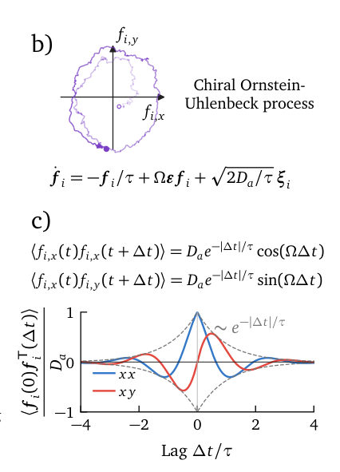
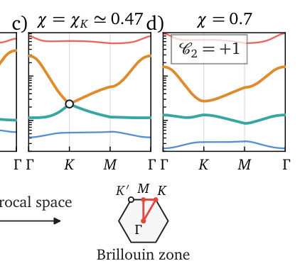
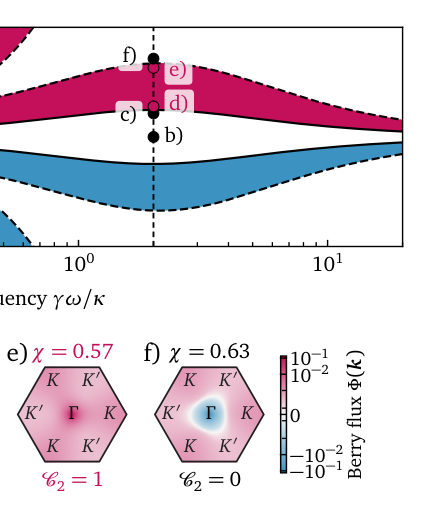
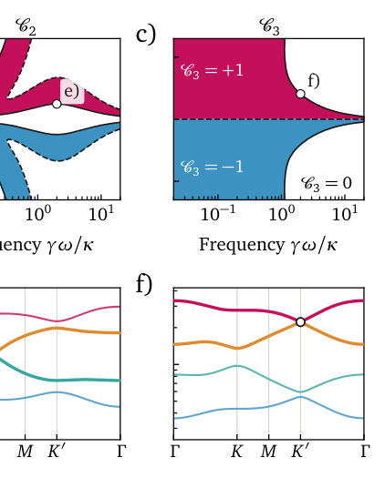
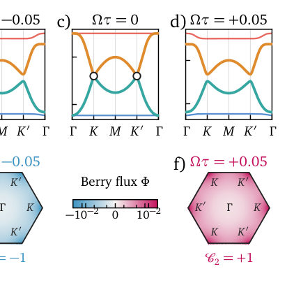
Summary. This work demonstrates that topological properties, quantified by Chern numbers, can emerge in the fluctuation spectrum of chiral active matter, even when the underlying deterministic physics is topologically trivial. This is achieved by analyzing the correlation spectrum driven by non-equilibrium chiral noise. The finding suggests that fluctuations themselves can host robust, topologically protected modes, distinct from standard mechanical edge states.
Why it may be interesting. The concept of topological invariants arising from non-equilibrium fluctuations, rather than just deterministic Hamiltonians, provides a powerful new lens for understanding active matter dynamics and non-Hermitian physics.
Main problem. Investigating whether band topology, typically associated with deterministic dynamics, can reside in the fluctuations of a system driven far from equilibrium.
Main result. The displacement spectrum can exhibit bands with nonzero Chern numbers despite the underlying deterministic mechanics and noise spectrum being individually Chern-trivial.
Method. Analysis is performed in Fourier space using the displacement spectrum $S(\mathbf{k},\omega)$ and calculating the Chern number for the correlation matrix.
Model / system. The system is a periodic 2D honeycomb lattice undergoing overdamped dynamics driven by a non-equilibrium chiral Ornstein–Uhlenbeck active noise force.
Key observables. Displacement spectrum $S(\mathbf{k},\omega)$, Chern number $C_m(\omega)$, and fluctuation eigenvalues $s_n(k,\omega)$.
Important parameters / regimes. Stiffness ($\kappa$), pinning potentials ($\mu_A, \mu_B$), noise persistence time ($ au$), and observation frequency ($\omega$).
Assumptions / limitations. The analysis treats the fluctuations themselves as a band structure, and the topology is defined on the correlation subspace, differing from standard band theory.
Figures summary. Figure 1 illustrates the lattice setup, chiral noise, and covariance structure. Figure 2 shows the evolution of the four eigenvalues $s_n$ along the Brillouin zone path, highlighting gap closing at a critical polarization $\chi_K$.
Paper structure. The paper establishes the physical model (honeycomb lattice, active noise), derives the fluctuation spectrum $S(\mathbf{k},\omega)$, and then analyzes its topology by calculating the Chern number, demonstrating the emergence of non-trivial topology via a Haldane-like effective coupling.
While band topology is usually associated with the deterministic dynamics of a system, we show that it can instead reside in its fluctuations. Using a reciprocal lattice driven by nonequilibrium chiral active noise, we find that the displacement spectrum---which quantifies displacement fluctuations---admits bands with nonzero Chern numbers despite a Chern-trivial deterministic mechanics. A Haldane-like effective coupling in the correlation spectrum explains this topology and produces topological transitions controlled by both the stochastic driving and the observation frequency. Through the bulk--boundary correspondence, we find boundary-localized fluctuation modes that are distinct from the usual propagating mechanical edge states.
Authors: Steven Blaber
Type: theory · Category: statistical mechanics · PDF: https://arxiv.org/pdf/2608.25070v1
Analysis basis: full PDF text, analyzed in chunks
Topic relevance: non-equilibrium universality 3/5 · Keldysh / 2PI / non-Gaussian methods 2/5 · methods for driven-dissipative 2/5 · quantum measurements 2/5 · correlated / nonlocal dissipation 1/5 · driven-dissipative phase transition 1/5
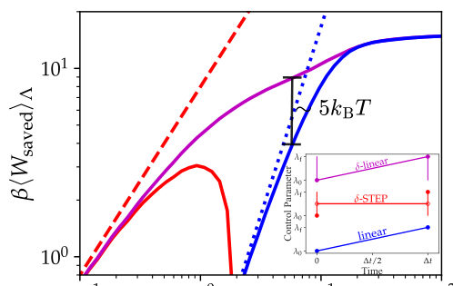
Summary. This work determines the optimal control strategy for rapidly driving inertial stochastic systems to minimize energy dissipation. It proves that delta-function kicks are universally optimal, allowing the saved work to scale linearly with the driving time. This linear scaling represents a significant theoretical improvement over quadratic scaling, providing deep insights into non-equilibrium thermodynamics.
Why it may be interesting. The finding that optimal control requires impulsive kicks to achieve linear work scaling is a powerful, non-intuitive result in non-equilibrium thermodynamics, providing a fundamental constraint on how fast processes can be driven.
Main problem. The paper investigates the optimal control strategy required to minimize energy dissipation (or maximize saved work) when rapidly driving inertial stochastic systems.
Main result. Optimal control necessitates the application of delta-function kicks, which allows the saved work to scale linearly with the short protocol duration ($\propto \Delta t$), leading to an infinitely large ratio of work savings compared to protocols without kicks.
Method. The analysis uses short-time approximations ($\Delta t o 0$) applied to the dynamics governed by generalized Langevin equations, optimizing the average work done using impulse control theory.
Model / system. The system models inertial stochastic dynamics, including active matter and quantum Brownian motion, described by Klein-Kramers dynamics or generalized Langevin equations. The control is implemented via instantaneous momentum shifts (delta-function kicks).
Key observables. Saved work ($\langle W_{ ext{saved}} angle_\Lambda$), average work ($\langle W angle_\Lambda$), and the scaling of these quantities with the time step $\Delta t$.
Important parameters / regimes. Short time limit ($\Delta t o 0$), damping coefficient ($\xi$), mass ($m$), and the parameters defining the external driving force ($\Delta F$).
Assumptions / limitations. The analysis assumes the system is inertial and that the optimal control involves impulsive momentum shifts. Specific derivations rely on approximations up to $O(\Delta t^2)$ and assumptions about the dissipator coupling to position.
Paper structure. The paper builds from general optimal control theory in stochastic thermodynamics, applies it to inertial systems using short-time expansions, and compares the performance of delta-function kick protocols against standard linear protocols, showing the superior scaling of the former.
Optimal control helps guide our understanding of stochastic thermodynamics, leading to universal properties and geometric formulations. Among the initially surprising properties of optimal control, not only discrete jumps but delta function kicks have been shown to be necessary to minimize dissipation in specific example systems. Using a short-time approximation, I show that delta-function kicks are universally optimal for minimizing dissipation in inertial stochastic systems, including active and quantum dynamics under general constraints. Fundamentally stemming from basic kinematics, delta-function kicks are required to achieve linear scaling of work with short protocol durations compared to the quadratic scaling without the kicks. This implies a diverging (infinite) ratio of saved work in the short-time limit.
Authors: Ilari Lilja, Ekaterina Mukhanova, Michael Perelshtein, Kirill Petrovnin, Stanislav Khaldeev, Visa Vesterinen, Gheorghe Sorin Paraoanu, Pertti Hakonen
Type: experiment · Category: other · PDF: https://arxiv.org/pdf/2608.25645v1
Analysis basis: full PDF text, analyzed in chunks
Topic relevance: driven-dissipative phase transition 3/5 · quantum optics experiment 3/5 · quantum measurements 2/5 · Keldysh / 2PI / non-Gaussian methods 1/5 · QC/QI experiment 1/5 · methods for driven-dissipative 1/5
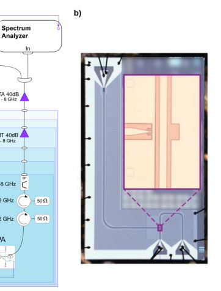
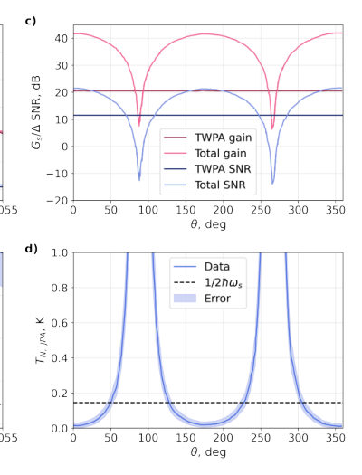

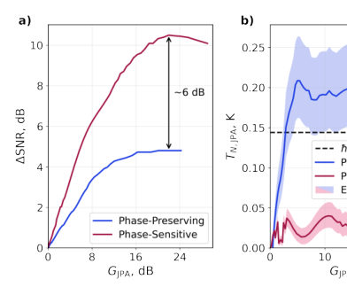
Summary. The authors report on a superconducting quantum amplifier cascade (JPA-TWPA) designed for ultra-low-noise microwave measurements. By operating the Josephson Parametric Amplifier in a phase-sensitive regime, they achieved a system noise temperature significantly below the standard quantum limit. This technique enables direct, high-fidelity probing of quantum devices without complex background noise subtraction.
Why it may be interesting. This work is highly relevant to quantum optics and open quantum systems as it demonstrates a practical method to measure quantum noise below the standard quantum limit using superconducting circuits.
Main problem. The research investigates phase-sensitive quantum amplification using superconducting circuits to achieve noise performance below the standard quantum limit.
Main result. Phase-sensitive operation in a JPA-TWPA cascade achieved a minimum system noise temperature of $94 \pm 12$ mK, significantly beating the standard quantum limit of 288 mK.
Method. The performance was characterized by comparing noise added in phase-preserving versus phase-sensitive parametric amplification regimes using a cascaded amplifier setup.
Model / system. The core system is a Josephson Parametric Amplifier (JPA) based on a SQUID, which is cascaded with a Traveling-Wave Parametric Amplifier (TWPA). The device is fabricated using VTT SWAPS technology and operated at millikelvin temperatures.
Key observables. System noise temperature ($T_S$), added noise temperature ($T_N$), and output quadrature variances ($\Delta X^2_{ ext{out}}$, $\Delta P^2_{ ext{out}}$).
Important parameters / regimes. Operating frequency of 6 GHz; the standard quantum limit (SQL) of 288 mK; the phase-sensitive regime ($\omega_s = \omega_p/2$).
Assumptions / limitations. The analysis relies on the JPA being driven in a three-wave mixing configuration and utilizes the Friis formula for cascade noise estimation.
Figures summary. Figures illustrate the device setup, comparing JPA performance in phase-preserving versus phase-sensitive modes, and plotting noise temperatures versus JPA gain.
Paper structure. The paper establishes the theoretical framework for noise analysis in parametric devices, compares the noise performance of phase-preserving versus phase-sensitive regimes, and presents experimental results demonstrating sub-SQL noise levels using the JPA-TWPA cascade.
Phase-sensitive parametric devices enable quadrature-selective amplification with the potential for sub-quantum-limited noise performance. In this work, we investigate the operation of a SQUID-based Josephson Parametric Amplifier (JPA), comparing its performance in the phase-preserving and phase-sensitive regimes. The device, fabricated using VTT SWAPS technology, is driven in a three-wave mixing configuration and characterized in a reflection-based measurement setup at millikelvin temperatures. To directly probe the noise performance at low JPA gains, we employ a cascaded amplification scheme in which a Traveling-Wave Parametric Amplifier (TWPA) provides low-noise pre-amplification of the JPA output. In a phase-preserving operation, the JPA exhibits near-quantum-limited performance with a system noise temperature of $351\pm53$ mK at 6 GHz. In contrast, phase-sensitive operation yields a minimum system noise temperature of $94\pm12$ mK, well below the standard quantum limit of 288 mK. Our results demonstrate that a JPA-TWPA amplifier cascade opens the door to direct, high-fidelity probing of quantum devices without the need for background noise subtraction.
Authors: Paolo D'Alberto
Type: theory · Category: quantum information and computing · PDF: https://arxiv.org/pdf/2608.25254v1
Analysis basis: full PDF text, analyzed in chunks
Topic relevance: analog quantum simulation 3/5 · methods for driven-dissipative 3/5 · correlated / nonlocal dissipation 1/5 · driven-dissipative phase transition 1/5 · non-equilibrium universality 1/5 · quantum measurements 1/5
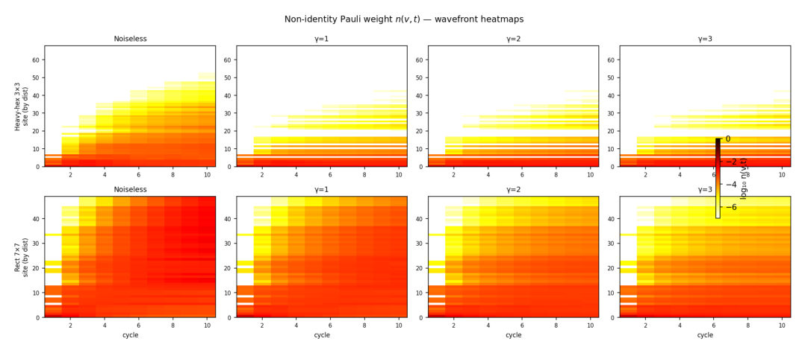
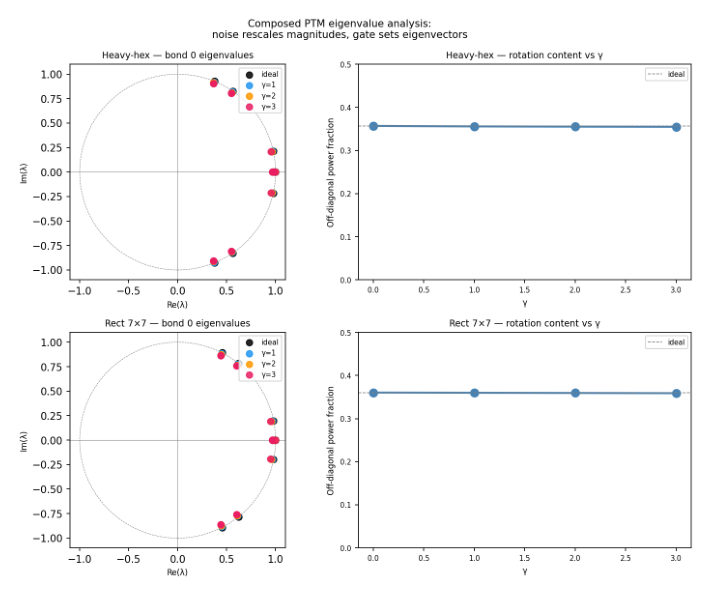
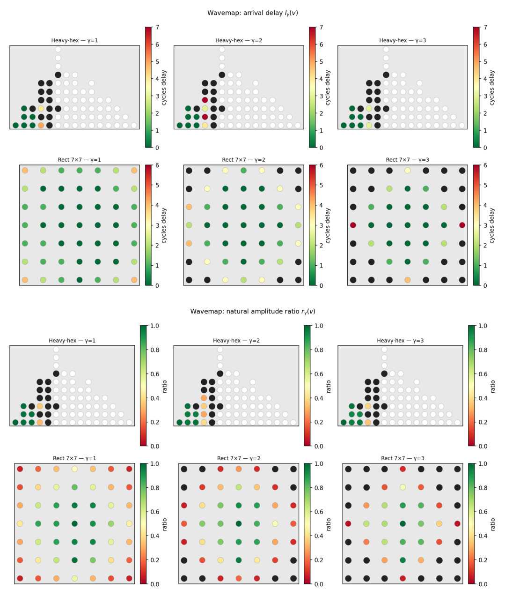
Summary. This work introduces the 'wavemap,' a novel, model-free diagnostic tool to quantify information loss in quantum simulations under noise. By analyzing the spatial propagation of quantum information across a lattice, the authors use an entropy-optimal extrapolation technique to recover lost information. This method is particularly valuable for understanding hardware noise limitations in quantum computation.
Why it may be interesting. It provides a highly detailed, spatially resolved, and information-theoretically grounded diagnostic tool for characterizing noise effects in quantum simulations, which is crucial for scaling quantum computation.
Main problem. Quantifying information loss during quantum time evolution due to noise, going beyond simple autocorrelation methods.
Main result. The developed wavemap diagnostic successfully recovers a significant fraction of lost information (up to 55%) by exploiting the information-rich frontier region, providing a model-free tool for error mitigation.
Method. The authors employ an entropy-optimal Multi-Product Formula (MPF) constrained by the Lieb-Robinson causal bound, fitting time-adaptive coefficients over the lightcone frontier.
Model / system. The study analyzes quantum evolution (e.g., Kicked Heisenberg Ising model) simulated on heavy-hex and rectangular lattices using tensor network methods.
Key observables. Wavemap (arrival delay $l_\gamma(v)$ and cross-entropy loss $L_\gamma(v)$), Pauli weight $n(v, t)$, and the frontier $F(t)$.
Important parameters / regimes. Noise strength ($\gamma$), Lieb-Robinson causal constraint, and the time-adaptive coefficients $\alpha(t)$.
Assumptions / limitations. The analysis is most faithful at the wavefront where the bond dimension is small ($\chi \approx 1$), and the noise is characterized as pure amplitude damping.
Figures summary. Figures illustrate noise suppression on the lightcone, eigenvalue spectra confirming noise is purely damping, and the wavemap showing spatial deformation of the lightcone.
Paper structure. The paper introduces the wavemap diagnostic, analyzes the noise structure via PTMs, applies the MPF constrained by causality, and finally demonstrates the superior performance of time-adaptive coefficient fitting ($\alpha(t)$) over simpler extrapolation methods.
We introduce the wavemap: a spatial portrait of noise effects that assigns each site a per-noise-level arrival delay l_γ(v) and cross-entropy loss L_γ(v). These observables are exact at the lightcone frontier, where bond dimension χis small and the simulation is most faithful. Eigenvalue analysis of the composed gate-plus-noise Pauli transfer matrices confirms that the studied noise is pure amplitude damping: the spatial propagation pattern is entirely determined by the gate, making the wavemap a model-free noise diagnostic. We apply the multi-product formula (MPF) to recover the noiseless Pauli weight field from the noisy samples, subject to the Lieb-Robinson causal constraint nMPF <= nnl . Fitting time-adaptive coefficients α(t) over the frontier recovers up to 55% of the information loss relative to the best noisy sample, exploiting the fact that the frontier is where truncation error is smallest. On an IBM heavy-hex lattice with heterogeneous hardware noise the method identifies an information-starved regime, pointing to calibrated synthetic noise as the next required experiment.
Authors: Zhimao Liu, Jing Liu, Pan Zhang, Ying Tang
Type: theory · Category: statistical mechanics · PDF: https://arxiv.org/pdf/2608.25606v1
Analysis basis: full PDF text, analyzed in chunks
Topic relevance: methods for driven-dissipative 3/5 · non-equilibrium universality 3/5 · Keldysh / 2PI / non-Gaussian methods 2/5 · driven-dissipative phase transition 1/5
Summary. This work develops a novel, unified framework using variational neural networks to simulate and characterize the complex, time-dependent dynamics of Simple Exclusion Processes (SEP) in multiple dimensions. By calculating key quantities like the SCGF, the authors provide detailed insights into phase transitions and transport regimes, establishing a powerful computational tool for nonequilibrium statistical mechanics.
Why it may be interesting. The application of advanced machine learning techniques (VANs) to solve fundamental, analytically intractable problems in non-equilibrium statistical mechanics provides a powerful computational tool for studying complex many-body dynamics.
Main problem. The paper tackles the notoriously difficult problem of characterizing the full, time-dependent joint distribution for Simple Exclusion Processes (SEP) in nonequilibrium settings.
Main result. The authors establish a unified framework using variational neural networks to characterize finite-time dynamics across 1D, 2D, and 3D, revealing dimension-independent scaling laws for phase transitions.
Method. They employ Variational Autoregressive Networks (VAN) to approximate the evolution of the system's probability distribution governed by a master equation, calculating the Scaled Cumulant Generating Function (SCGF).
Model / system. The primary model is the Simple Exclusion Process (SEP), including variants like SSEP, ASEP, and TASEP, studied on lattices of increasing dimensions (1D to 3D).
Key observables. Dynamical activity, dynamical susceptibility, time-dependent joint distribution, and the SCGF ($\psi_t(s)$).
Important parameters / regimes. System size ($L$), time ($t$), and the counting field ($s$) conjugate to the dynamical observable.
Assumptions / limitations. The core approximation is using the Variational Autoregressive Network (VAN) ansatz to manage the exponentially large configuration space.
Figures summary. Figures illustrate the unified framework, showing the master equation under a tilted generator and the pipeline for calculating the variational free energy, alongside comparisons of finite-time vs. steady-state results in 3D.
Paper structure. The paper introduces the intractable problem, details the variational framework using VANs, validates the approach against known results (1D TASEP, 2D SSEP), and then presents dimension-specific findings (1D, 2D, 3D) to establish the unified theory.
The simple exclusion process (SEP) is a paradigmatic model for nonequilibrium transport, yet the rich dynamics of its time-dependent joint distribution over an exponentially large configuration space remain notoriously intractable. Here, we leverage variational autoregressive networks to systematically characterize the nonequilibrium dynamics of symmetric (SSEP), asymmetric (ASEP), and totally asymmetric (TASEP) cases from one to three dimensions. We first validate the approach by reproducing the previous finite-time results for the 1D SSEP and long-time tensor-network results for the 2D SSEP, and then provide richer finite-time dynamics of the SSEP, ASEP, and TASEP in 1D and 2D, and a new finite-time analysis in 3D. Specifically, in 1D, we reveal that finite-time dynamical-activity maps directly correspond to the classical three-phase TASEP steady-state organization, and, in the long-time limit, boundary and bulk effects separately govern the dynamical susceptibility during the crossover from diffusive to ballistic transport. In 2D, we establish a mean-field directional-density criterion, supported by our neural-network calculations, and show that long-time boundary and bulk effects mirror their 1D counterparts. In 3D, we uncover new finite-time scaling relations for the active-inactive phase transition of the SSEP, and reveal a broadly consistent scaling exponent of the phase-transition point versus system size, implying that the phase-transition point is asymptotically controlled by the characteristic length scale ($s_c\sim L^{-2}$) regardless of dimension. This work thus establishes a unified framework for characterizing the nonequilibrium dynamics of representative transport systems.
Authors: Longwen Zhou
Type: theory · Category: other · PDF: https://arxiv.org/pdf/2608.25411v1
Analysis basis: full PDF text, analyzed in chunks
Topic relevance: driven-dissipative phase transition 3/5 · non-equilibrium universality 2/5 · Keldysh / 2PI / non-Gaussian methods 1/5 · analog quantum simulation 1/5 · correlated / nonlocal dissipation 1/5 · methods for driven-dissipative 1/5
Summary. This work generalizes the concept of topological Euler insulators to non-Hermitian systems, providing a theoretical framework to characterize their nontrivial topology. By analyzing three-band lattice models, the authors demonstrate that topological Euler bands persist in non-Hermitian regimes, revealing unique phase transitions and edge-band overlaps. This broadens the scope of topological matter theory into the realm of open quantum systems.
Why it may be interesting. The extension of topological invariants like the Euler class to non-Hermitian systems is crucial for understanding open quantum systems where gain/loss are present, bridging topological theory with open quantum dynamics.
Main problem. The paper extends the concept of topological Euler insulators, characterized by the Euler class, from Hermitian to non-Hermitian quantum systems.
Main result. It establishes the existence of topological Euler bands in non-Hermitian systems and identifies non-Hermiticity-induced phase transitions and anomalous edge-band overlaps.
Method. The authors develop a theoretical framework using a generalized Euler class ($e_{12}$) and analyze the entanglement spectrum and bulk-boundary correspondence for non-Hermitian lattice models.
Model / system. The focus is on two-dimensional, three-band non-Hermitian lattice models with symmetric Hamiltonians, described by a Bloch Hamiltonian $H(\mathbf{k})$.
Key observables. Topological Euler bands, entanglement spectrum, spectral gap ($\Delta$), and the Euler class ($e_{12}$).
Important parameters / regimes. The system is analyzed in gapped non-Hermitian phases ($\Delta > 0$).
Assumptions / limitations. The theory is formulated for the three-band Hamiltonian but claims generalizability to multiple band systems.
Paper structure. The paper introduces the problem, develops the theoretical framework using the Euler class and spectral diagnostics, applies it to construct and investigate three explicit non-Hermitian models, and concludes by discussing the physical implications.
Topological Euler insulators emerge in multiband systems with real Bloch Hamiltonians and wavefunctions. Their fragile topologies are characterized by the Euler class of degenerate bands and protected by the $PT$ or $C_2T$ symmetry in two dimensions, which go beyond the tenfold $K$-theory classification of topological matter. In this work, we extend the conception of topological Euler insulators to non-Hermitian systems and propose a theoretical framework to unlock their nontrivial Euler topology. Focusing on two-dimensional, three-band non-Hermitian lattice models with symmetric Hamiltonians, we formulate a comprehensive description of their topological Euler bands, entanglement spectrum and bulk-boundary correspondence. Three typical models of non-Hermitian Euler insulators are constructed and investigated explicitly to illustrate our theory. Unique topological phase transitions and anomalous edge-band overlaps with non-Hermitian origins are further identified. Our study establishes the presence of topological Euler bands in non-Hermitian systems and unveils their intriguing physical characteristics, thereby broadening the existing territory of topological matter in non-Hermitian open systems.
Authors: Jonas Freiheit, Francesco Campaioli
Type: theory · Category: disordered systems and neural networks · PDF: https://arxiv.org/pdf/2608.25511v1
Analysis basis: full PDF text, analyzed in chunks
Topic relevance: analog quantum simulation 3/5 · driven-dissipative phase transition 2/5 · non-equilibrium universality 2/5 · methods for driven-dissipative 1/5
Summary. This work investigates quantum reservoirs, modeled by Ising spin networks, to test if optimal information processing occurs at the boundary between order and chaos. By analyzing information scrambling using OTOCs, the authors demonstrate that prediction performance peaks at this critical onset point. Crucially, they show that the memory capacity scales superextensively at this onset, establishing information scrambling as a fundamental scaling law for quantum machine learning devices.
Why it may be interesting. It provides a concrete, scalable physical mechanism (information scrambling) within quantum many-body systems that directly dictates the performance scaling of artificial neural network components, bridging quantum dynamics with machine learning theory.
Main problem. The paper tests the hypothesis that optimal information processing occurs near the boundary between order and chaos, applying this principle to quantum many-body systems used as quantum reservoirs for time-series forecasting.
Main result. Prediction precision peaks precisely at the onset of information scrambling, where the reservoir's memory capacity exhibits superextensive scaling ($\alpha>1$) with system size $N$.
Method. The study uses numerical simulations on 2D Ising networks, characterizing dynamics using Out-of-Time-Order Correlators (OTOCs) to locate the scrambling onset, and benchmarking performance via time-series forecasting.
Model / system. The model is a 2D Ising network of spins, governed by a Hamiltonian involving Ising couplings and transverse fields. The system is operated as a quantum reservoir for time-series prediction, with the control parameter being the ratio $h_x/J$.
Key observables. Prediction precision, Out-of-Time-Order Correlators (OTOCs), Participation Ratio (basis spreading), and Memory Capacity (linear vs. nonlinear).
Important parameters / regimes. The critical control parameter is the ratio $h_x/J$, which separates the frozen, onset, and scrambled regimes. Scaling exponents ($\alpha$) are key to quantifying performance.
Assumptions / limitations. The readout mechanism is assumed to be linear (ridge regression), and the reservoir state is reset at each time step to simulate practical constraints.
Figures summary. Figures illustrate the time-series prediction protocol, showing the transition from localized (frozen) to global (scrambled) feature population at the onset of scrambling.
Paper structure. The paper establishes the theoretical framework by linking information processing optimization to the order-chaos boundary. It then details the simulation protocol using Ising networks and OTOCs to measure scrambling. Finally, it quantifies the scaling laws for prediction precision and memory capacity across the different dynamical regimes.
The idea that information processing is optimised near the boundary between order and chaos has emerged as a recurring principle across neuroscience, complex systems, and machine learning. Here we test this hypothesis in quantum many-body systems, numerically simulating two-dimensional Ising networks of up to $N=20$ spins, operated as quantum reservoirs for time-series forecasting. Using out-of-time-order correlators (OTOCs), we locate the onset of information scrambling as the input strength is swept, separating regimes where information is frozen and scrambled across the whole reservoir state. We show that prediction precision peaks at the onset of scrambling, along with the number of computational-basis states that the reservoir actively populates. We then show that prediction precision grows as a power law $\sim N^α$ in the reservoir size, superextensively $(α>1)$ at the onset of scrambling and only sublinearly $(α<1)$ in either neighbouring regime. Finally, we show that scrambling enhances the nonlinear components of the reservoir memory while reducing its linear capacity. At the onset, the total memory capacity grows superextensively, provided that the necessary ``forgetting'' mechanism is supplied by a collective relaxation channel. These results consolidate the role of information scrambling in learning systems, turning it from an operating point into a scaling law for the performance of quantum reservoirs.
Authors: Christoph F. Wildfeuer
Type: theory · Category: other · PDF: https://arxiv.org/pdf/2608.25534v1
Analysis basis: full PDF text, analyzed in chunks
Topic relevance: interference shaping light 3/5 · quantum measurements 3/5
Summary. This theoretical paper establishes a universal limit on the performance of multi-pass quantum sensors by optimizing the information gained relative to the energy absorbed by the sample. It finds that the optimal strategy is governed by a single mathematical function, suggesting that for fragile samples, the simplest measurement—using a single recycled photon—is the best approach.
Why it may be interesting. It provides a rigorous, quantitative framework for understanding fundamental resource limitations in quantum metrology, showing how the optimal measurement strategy is dictated by the most constrained resource (absorbed photons).
Main problem. The paper determines the universal loss-limited optimum for quantum sensing schemes, specifically quantifying the maximum information gain achievable per photon absorbed by a sample.
Main result. The optimum gain is governed by a universal trade-off function, $h(x) = x^2/(e^x-1)$, yielding a maximum value of $\approx 0.648$. For fragile samples, the optimal measurement strategy converges to the simplest one: using a single, recycled photon.
Method. The analysis involves deriving the figure of merit (information gained per absorbed photon) for various multi-pass quantum sensing setups, comparing sequential versus parallel probe strategies.
Model / system. The study models fixed multi-pass quantum sensing schemes, including interaction-free interrogation, multi-pass phase interferometry, and the detection of faint companions near a strong source.
Key observables. Information gained per absorbed photon, Fisher information, and the dose absorbed by the sample ($n_{abs}$).
Important parameters / regimes. Loss per pass ($\epsilon$), absorption ($\alpha$), number of passes ($m$), and the ratio of faint companion intensity to primary source intensity ($\epsilon_r$).
Assumptions / limitations. The analysis is restricted to fixed arrangements (single-photon multi-pass chains) and assumes the resource measure is 'information per absorbed photon.'
Figures summary. Figures compare different sensing cases (absorption estimation, Zeno chain, phase accumulation, N00N states) based on the resource measure, and one figure illustrates sequential versus parallel spending methods.
Paper structure. The paper systematically compares the performance of multiple quantum sensing protocols (e.g., phase sensing, interaction-free interrogation) under the constraint of limited absorbed photons, deriving a universal mathematical optimum that dictates the best measurement strategy.
Multi-pass schemes send a photon through a sample several times to learn more about it. When the sample rather than the light is scarce, the natural figure of merit is the information gained per photon the object absorbs. We show that one constant fixes the loss-limited optimum of every fixed scheme in which a single photon passes repeatedly through the sample and is detected once at the end. Three properties suffice: information that grows as the square of the pass number, a fixed survival probability per pass, and no dose from a photon already lost. They force a single trade-off function $h(x)=x^2/(e^x-1)$, where $x$ is the number of passes times the loss per pass. Its maximum, 0.648, sits at $x_{\mathrm{opt}}=1.594$. The loss-limited ceiling of interaction-free interrogation and the multi-pass phase optimum of Yu et al. are two instances. Phase sensing of a weakly absorbing object is a third, optimal at $m_{\mathrm{opt}}=x_{\mathrm{opt}}/(ε+α)$ passes; the absorption $α$ and the parasitic loss $ε$ enter the optimum only through their sum, but the damage counts only $α$. N00N states and their loss-robust generalisations do worse per absorbed photon, and optimising over photon number and pass number together returns a single recycled photon. Two further problems are priced in the same measure. Absorption estimation gains nothing, for any scheme. Detecting a faint companion below the Rayleigh limit costs the companion a dose that does not depend on its faintness, while under direct imaging the dose grows without bound. For a fragile sample the gentlest measurement is also the simplest one: a single photon, recycled.
Authors: Su Direkci, Simon Lieu, Kyungjoo Noh, Connor T. Hann
Type: theory · Category: quantum information and computing · PDF: https://arxiv.org/pdf/2608.25959v1
Analysis basis: full PDF text, analyzed in chunks
Topic relevance: methods for driven-dissipative 3/5 · correlated / nonlocal dissipation 1/5 · driven-dissipative phase transition 1/5 · quantum measurements 1/5
Summary. This work proposes a novel '0-n' Fock qubit architecture that uses engineered dissipation to stabilize a noise bias, making it robust against bit-flip errors. By encoding information across multiple levels of a nonlinear oscillator, the authors show that bit-flip errors are exponentially suppressed with the number of levels ($n$). This technique allows for the simulation of fault-tolerant quantum computation with achievable logical error rates in the megaquop regime.
Why it may be interesting. The use of engineered dissipation to control error channels in a structured, multi-level system is highly relevant to open quantum systems and quantum control theory, providing a concrete physical realization for error suppression.
Main problem. The paper addresses the challenge of maintaining the inherent noise bias of qubits during gate operations, especially when ancillary qubits are involved.
Main result. They demonstrate that a '0-n' Fock qubit architecture can achieve exponentially suppressed bit-flip errors (approaching $10^{-8}$) while keeping phase-flip errors manageable, enabling high-fidelity quantum computation.
Method. The core method involves engineering dissipative stabilization using a Lindblad master equation to selectively suppress unwanted decay channels while preserving the logical subspace.
Model / system. The system is the '0-n' Fock qubit, modeled as a nonlinear multi-level system (like a transmon) where information is encoded in the ground state $|0 angle$ and the $n$-th excited state $|n angle$. The dynamics are governed by engineered dissipation rates.
Key observables. Bit-flip probabilities ($p_{ ext{bf}}$), phase-flip probabilities ($p_{ ext{pf}}$), and logical error rates ($p^*_L$).
Important parameters / regimes. The number of levels ($n \ge 9$), the engineered dissipation rates ($\kappa_s$), and the target error rates ($10^{-8}$ for bit-flips, $10^{-6}$ for logical error).
Assumptions / limitations. The analysis assumes the engineered dissipation rate greatly exceeds intrinsic decay rates, and later sections analyze the inclusion of dephasing noise effects.
Figures summary. Figures illustrate the schematic of the qubit and the spectral gap dependence on $n$, and later show contours comparing logical error rates for different code distances and dephasing levels.
Paper structure. The paper first establishes the noise bias mechanism via dissipative stabilization (analyzing $Q$ and $L_{ ext{coh}}$ blocks), then details the physical implementation using multi-mode filters, and finally recomputes logical error rates for a repetition code, including dephasing effects.
Noise-biased qubits have bit-flip errors that are exponentially suppressed relative to phase-flip errors, and offer a promising route toward fault-tolerant quantum computing. However, this bias can be compromised during gate operations with non-biased control qubits. To address this limitation, we propose a "0-n" Fock qubit architecture that maintains the noise bias by encoding information in the ground state and n-th excited state of a nonlinear multi-level system, such as a transmon. This encoding is achieved via a dissipative stabilization that acts as decay and gain for lower and upper intermediate levels, respectively. We first analytically demonstrate that bit-flip errors are exponentially suppressed with the number of levels. Then, we present a practical implementation using a multi-mode lossy filter to achieve the frequency-selective dissipation. Finally, we numerically demonstrate that bit-flip probabilities approaching $10^{-8}$ are achievable for controlled-X gates on cat qubits using the 0-n qubit as an ancilla with $n \geq 9$ (i.e. ten or more levels), for realistic experimental parameters. Building on this, we simulate syndrome extraction in a repetition code, achieving logical error rates in the megaquop regime with only a distance of $d=9$.
Authors: Sayak Mukherjee, José Afonso Oliveira, Sean William Moore, Jacob A. Dunningham
Type: theory · Category: other · PDF: https://arxiv.org/pdf/2608.25842v1
Analysis basis: full PDF text, analyzed in chunks
Topic relevance: interference shaping light 3/5 · quantum measurements 2/5
Summary. This paper proposes a hybrid quantum metrology technique that merges the benefits of multipass interferometry with the robustness of small entangled states. By analyzing the Quantum Fisher Information under realistic loss models, the authors demonstrate that a 'rotated NOON state' approach significantly enhances measurement precision compared to standard methods. This offers a practical pathway toward achieving quantum-enhanced sensing using current experimental technology.
Why it may be interesting. This work directly addresses the practical limitations of quantum enhancement in optical systems, providing concrete, loss-robust protocols that are highly relevant to experimental quantum optics and sensing.
Main problem. The primary challenge is achieving measurement precisions beyond the standard quantum limit in realistic quantum metrology setups, particularly when particle loss and decoherence are present.
Main result. A hybrid strategy combining small, loss-resilient entangled states with multipass interferometry significantly outperforms standard NOON-state or single-photon multipass schemes under realistic loss conditions.
Method. The authors analyze the Quantum Fisher Information (QFI) and Classical Fisher Information ($F_C$) to determine the ultimate measurement precision limit ($\delta\phi$).
Model / system. The model is a Mach-Zehnder interferometer incorporating a multipass element in one arm, where loss is modeled by imperfect mirror reflectivity ($\eta < 1$).
Key observables. Measurement precision ($\delta\phi$), Quantum Fisher Information ($F_Q$), and Classical Fisher Information ($F_C$).
Important parameters / regimes. Number of particles ($N$), number of passes ($p$), and the loss parameter ($\eta$).
Assumptions / limitations. The analysis assumes asymptotic estimation theory applies and that loss occurs primarily in the sensing arm.
Figures summary. Figures compare the scaling of $F_Q/(Np)$ and $F_C/(Np)$ for various states (NOON, BAT, Rotated NOON) versus the number of passes ($p$), demonstrating the superiority of the rotated NOON state.
Paper structure. The paper progresses from establishing the theoretical limits (Heisenberg scaling) to analyzing the failure modes of large entangled states and single-photon schemes due to loss. It then introduces and analyzes the hybrid strategy using rotated NOON states and multipass interferometry.
Quantum metrology typically uses entangled states to achieve measurement precisions beyond the standard quantum limit. The advantage increases with the size of the entangled state, however generating and preserving large entangled states remains a major experimental challenge. Multipass protocols offer an alternative approach by allowing a single probe to interact repeatedly with the parameter of interest, but their performance is highly susceptible to loss, which accumulates over successive passes and rapidly erodes the quantum advantage. Here we introduce a hybrid strategy that combines small, loss-resilient entangled states with multipass interferometry. We show that this approach retains the robustness of small entangled probes while exploiting repeated interactions to achieve substantial enhancements in measurement precision. Furthermore, we propose a concrete implementation using currently available technologies, demonstrating that the predicted performance gains should be experimentally accessible with existing capabilities.
← Index · ← Previous · Next →